Sprzedajemy nasze wspaniałe mieszkanie na osiedlu Wilno, które kupiliśmy w 2021 roku i wykończyliśmy z miłością.
Zadbaliśmy o szczegóły, dzięki czemu mieszkanie wyróżnia się m.in.:
* Drewnianymi podłogami, dzięki którym stopy odczuwają ciepło naturalnego materiału;
* Klimatyzacją w każdym pokoju, dzięki której przebywanie w domu jest zawsze przyjemnością;
*Sauną dla dwóch osób, pozwalającej na zrelaksowanie po ciężkim dniu - oraz deszczownicą obok;
* Kamiennym blatem w kuchni - dzięki któremu można bez obaw stawiać gorące naczynia i nie martwić się zarysowaniami czy plamami;
*Lodówką na wino - dzięki której można odczuć najlepsze odcienia smaku;
*Piekarnikiem parowym - dzięki któremu można zdrowo się odżywiać;
*Wysokiej jakości AGD (Bosch, Electrolux) w zabudowie - dzięki której można nie martwić się o jej niezawodność;
*Meblami na wymiar w kuchni, przedpokoju oraz łazience, dzięki którym mieszkanie wygląda elegancko i jest bardzo funkcjonalne. W kuchni zastosowano mechanizmy ułatwiające codzienne korzystanie, np. automatycznie wysuwany kosz na śmieci;
*Ceglaną ścianą w pokoju dziennym, wykonaną z pojedynczych elementów (nie płyt), dzięki czemu wygląda autentycznie. Druga ściana jest pomalowana z efektem betonu.
*Dużym tarasem (20 m²), dającym przestrzeń na spotkania z rodziną czy przyjaciółmi i spędzenie przytulnego wieczoru przy kolacji.
Staraliśmy się żeby mieszkanie było jak najbardziej przestronne - co nie jest łatwe w obecnych standardach mieszkaniowych ;)
Mieszkanie składa się z salonu połączonego z przestronną kuchnią, dwóch sypialni, łazienki z wanną, sauny z prysznicem, tarasu, balkonu i przedpokoju. Do mieszkania przynależy podwójne miejsce parkingowe (80 000 zł) oraz komórka lokatorska (15 000 zł).
Budynek ma zamknięte podwórko z placem zabaw, ochronę, rowerownię/wózkownię, zadbane rośliny i regularne sprzątanie. Sąsiedzi są życzliwi, osiedle jest młode i nowoczesne. W pobliżu znajduje się stacja SKM Wilno, z której jest jeden przystanek (4 min) do metra Wileńska.
Niewiele jest takich perełek na mapie Warszawy! Zapraszamy do kontaktu.
Nie jesteśmy zainteresowani współpracą z agencją.
We speak English / говорим по-русски
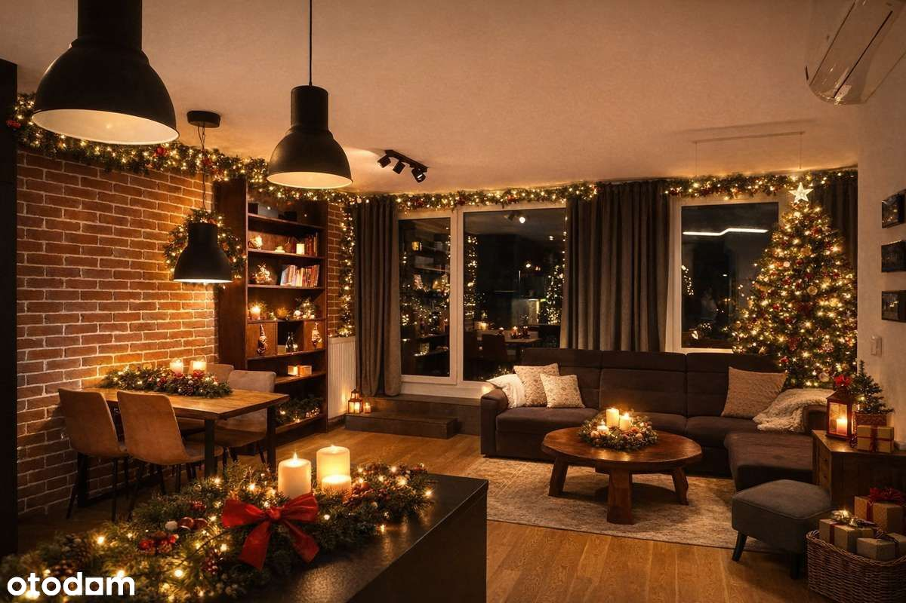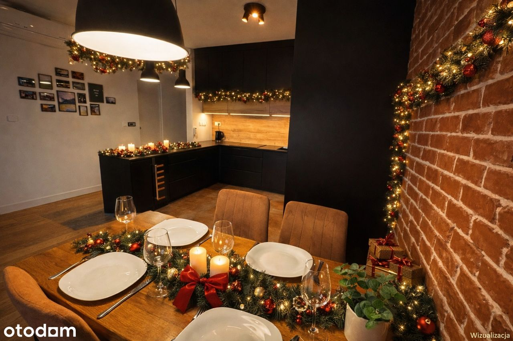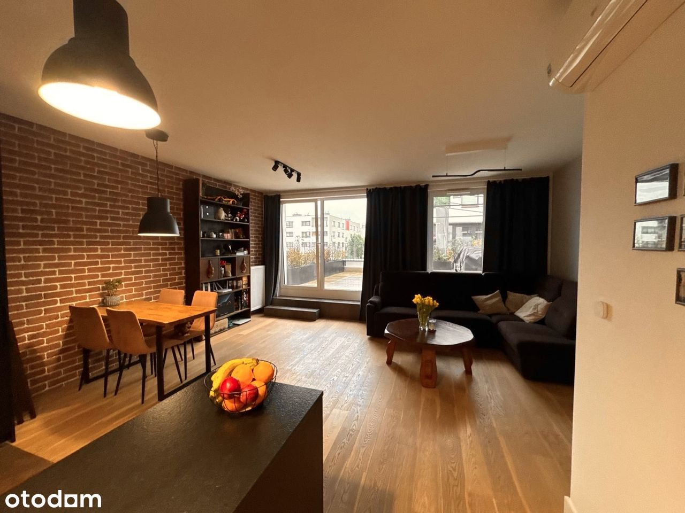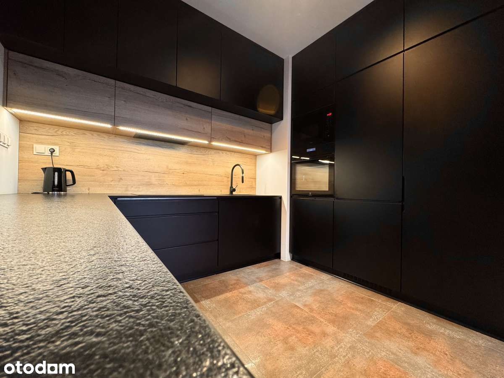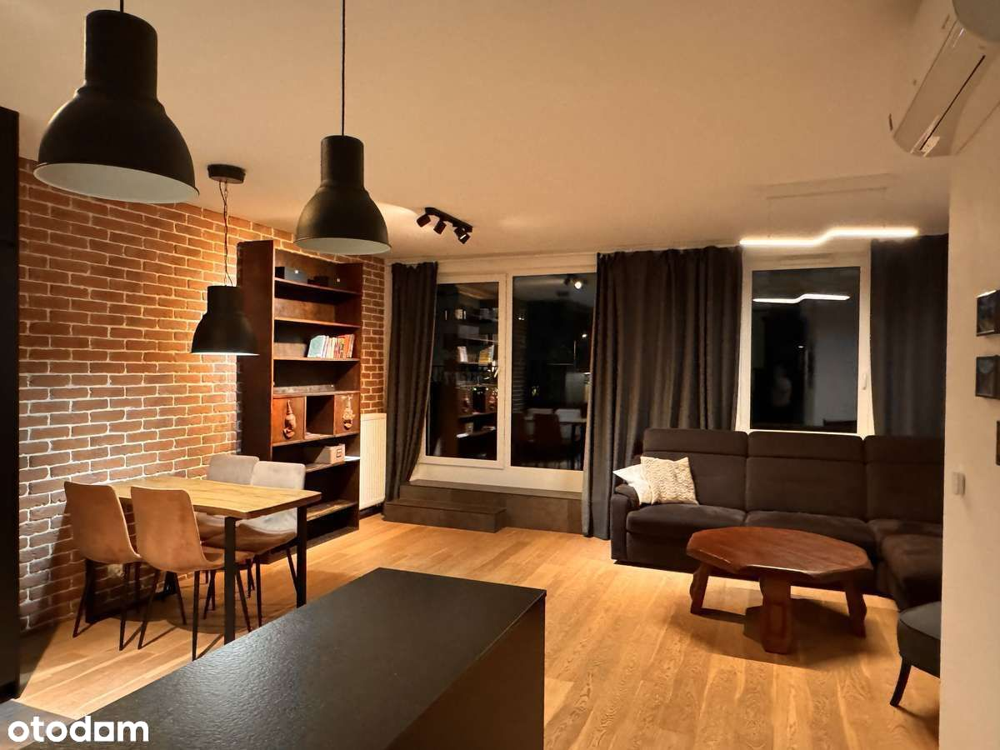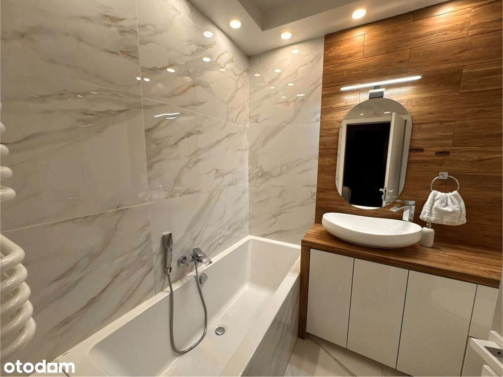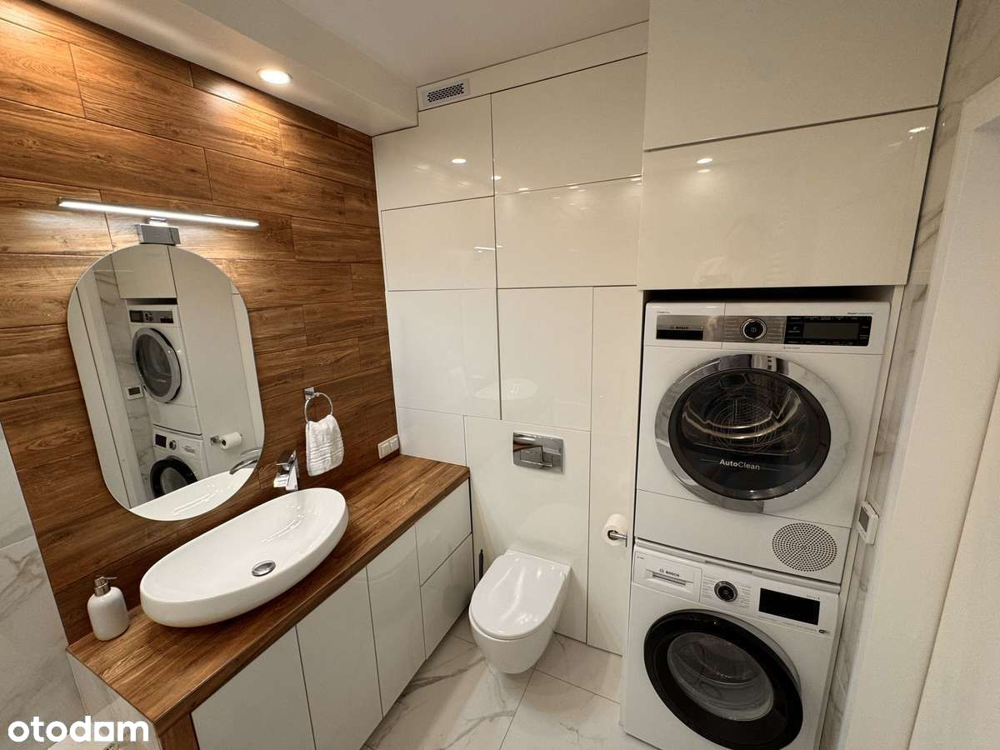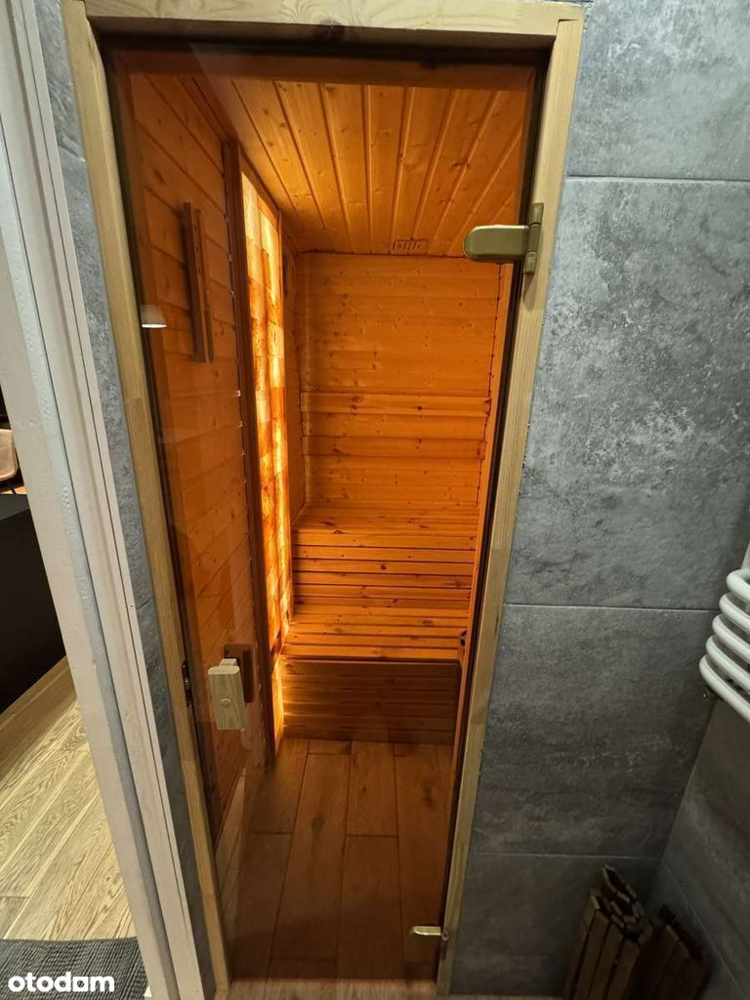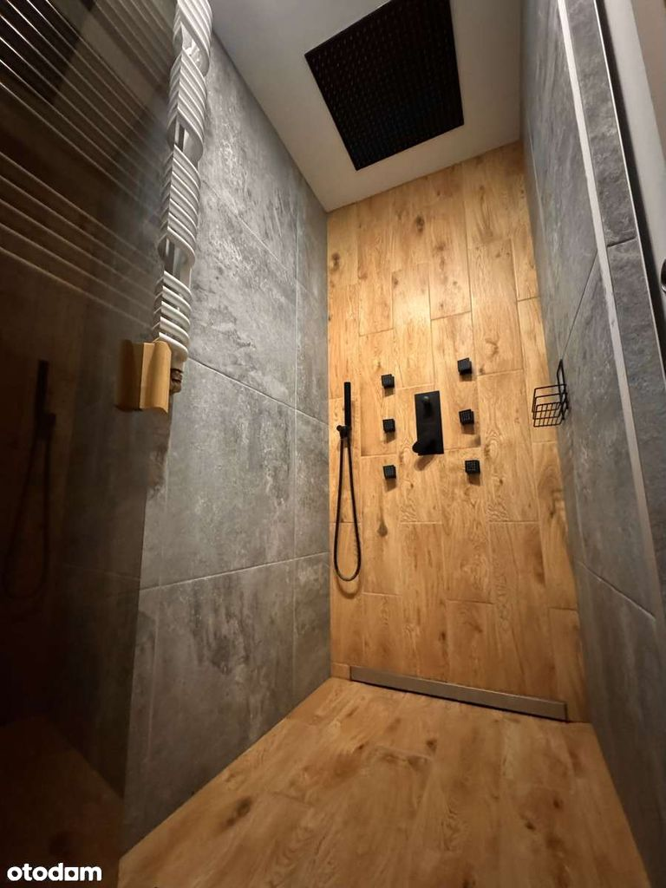 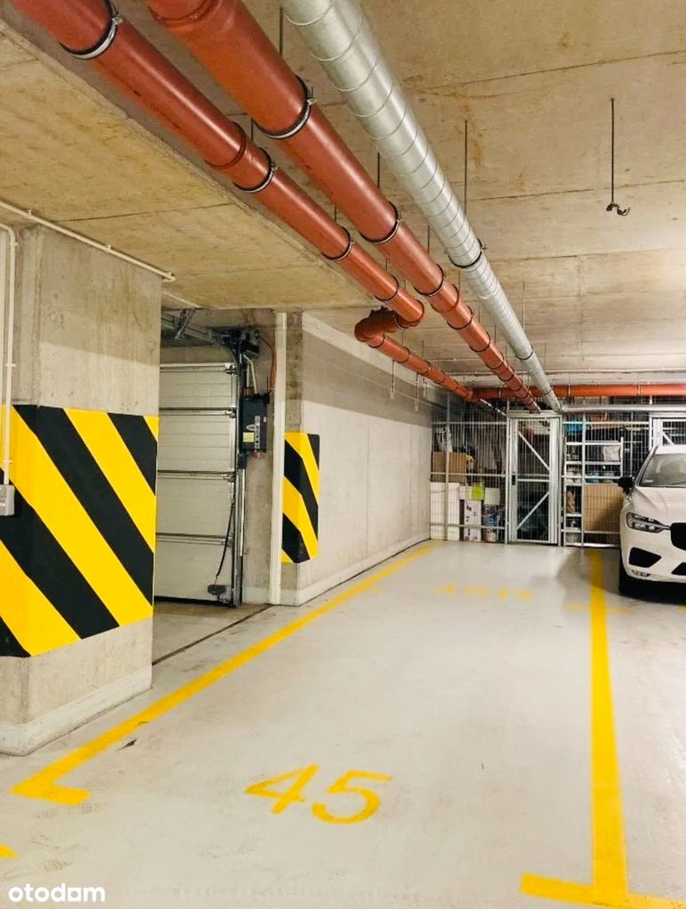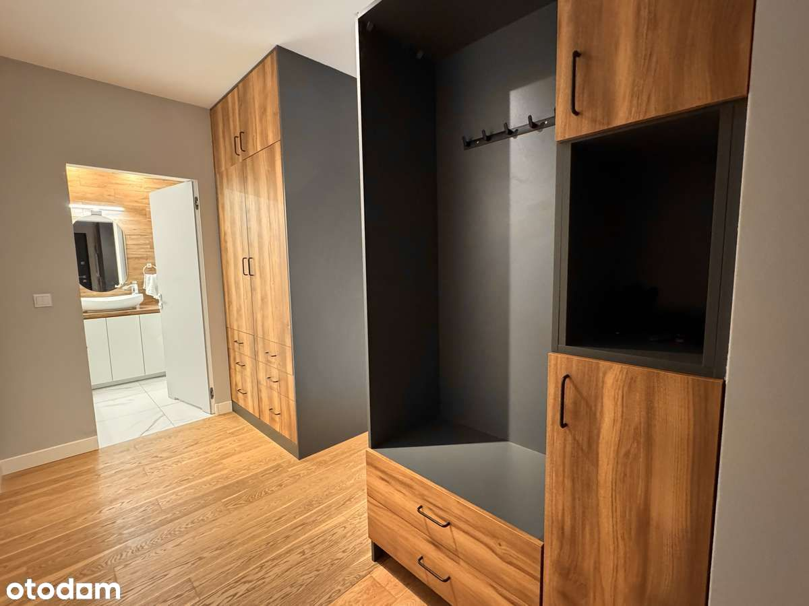
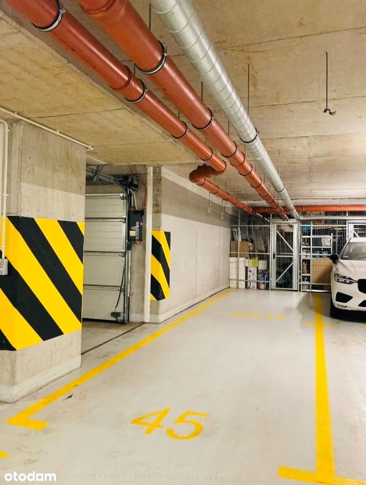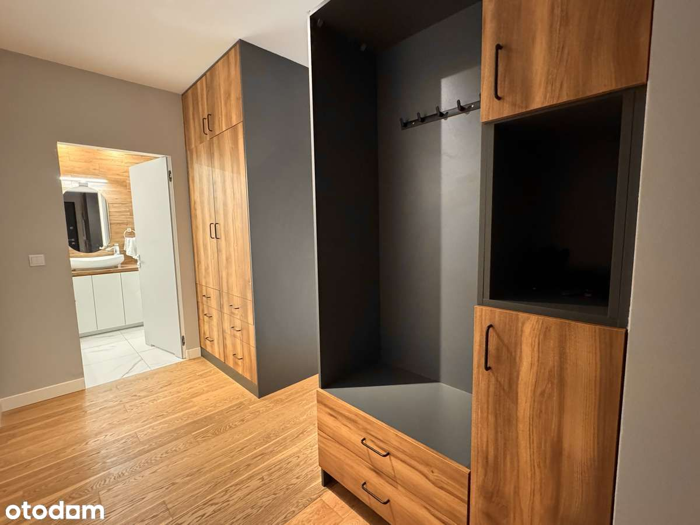